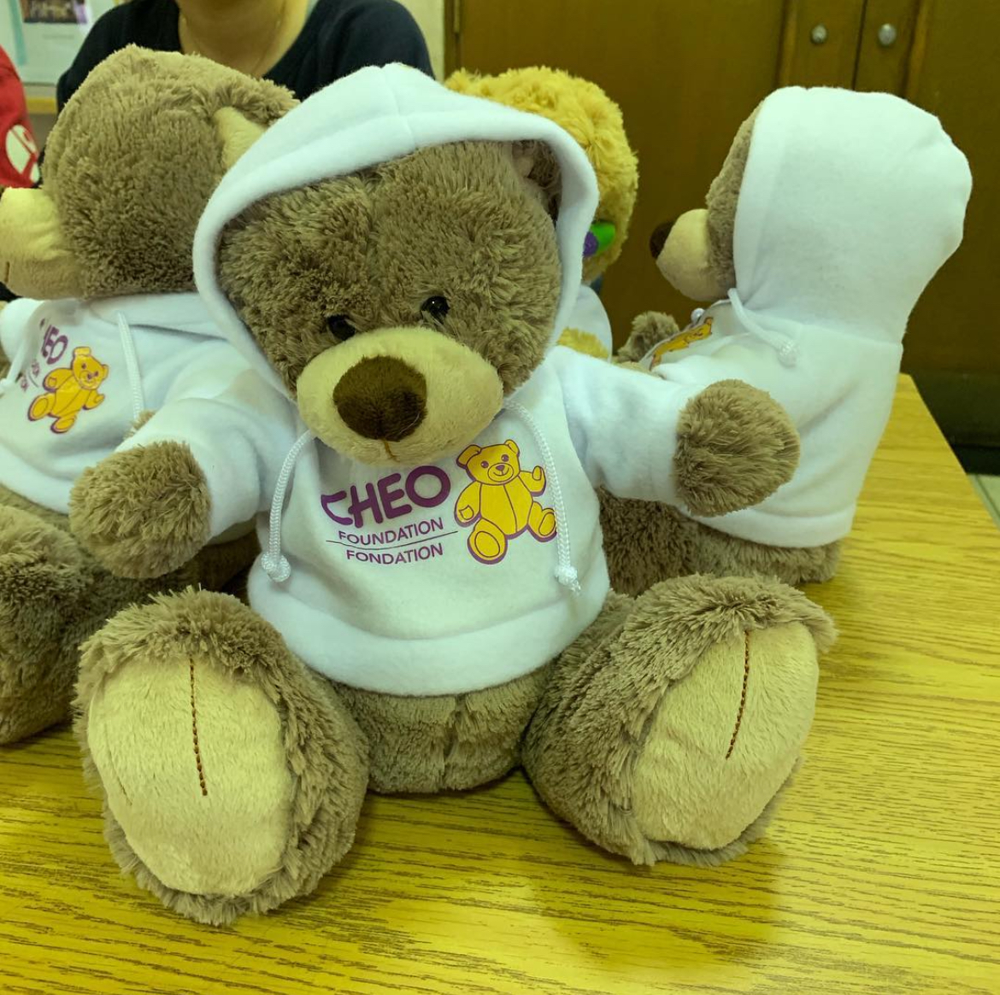
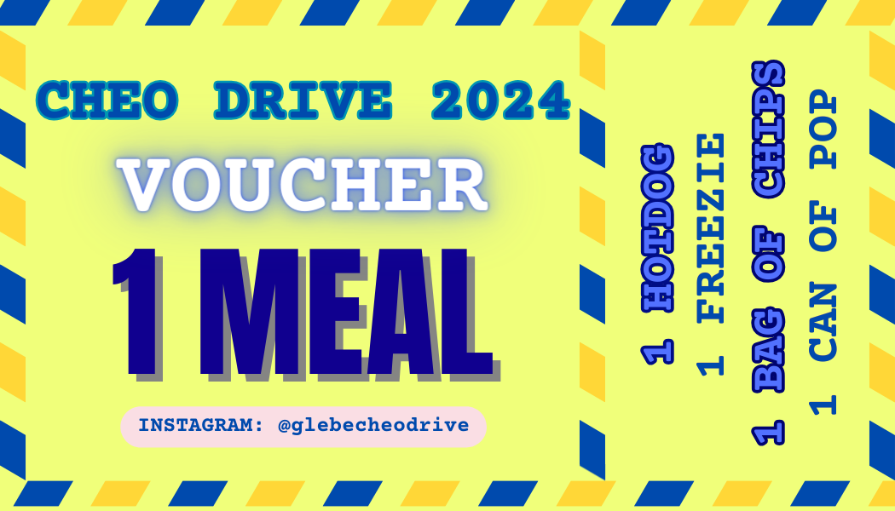

Trevor Whike
Trevor Whike brings a professional and solutions-oriented approach to consulting, with a focus on helping organizations solve challenges, strengthen operations, and deliver meaningful results.
About Me
Add Trevor's professional biography here. This section can describe his background, working style, consulting philosophy, and the industries or clients he serves.
Qualifications
Add Trevor's qualifications here, such as education, certifications, technical knowledge, leadership strengths, and relevant professional training.
Past Projects

Project Example One
Brief description of a completed project, client challenge, or consulting engagement.

Project Example Two
Brief description of outcomes, strategy, or work delivered through the project.
How to Contact
Email: trevor@taloh.com
Phone: (555) 111-2222
For consulting inquiries, please use the TALOH contact page or reach out directly.